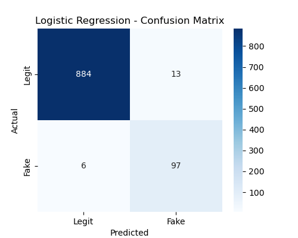
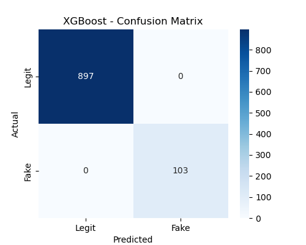

136
137
138 Suspicious Accounts Geo-Map
139 Geo_map
140
141
142
143 Anomaly Detection vs. True Labels
Histogram
145
146
147
148 User Activity Timeline
Timeline
150
151
152
153
Logistic Regression - Confusion Matrix
154 
155
156
157
158
Random Forest - Confusion Matrix
159
160
161
162
163
XGBoost - Confusion Matrix
164 
165
166
167
168